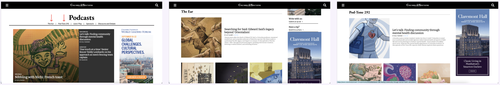
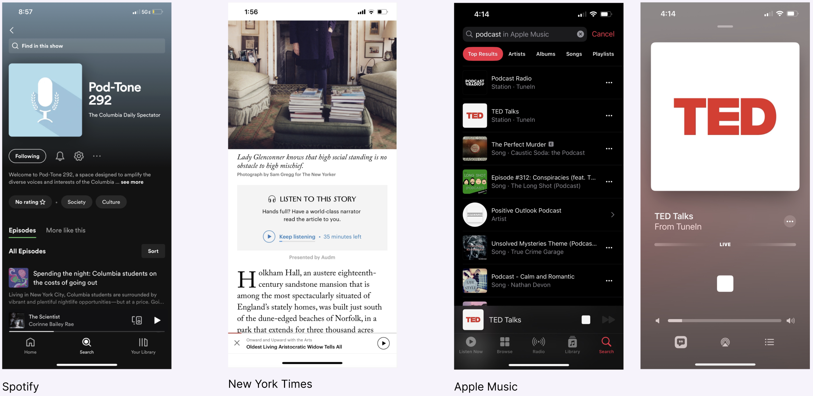
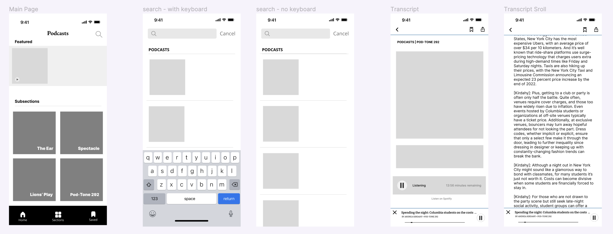
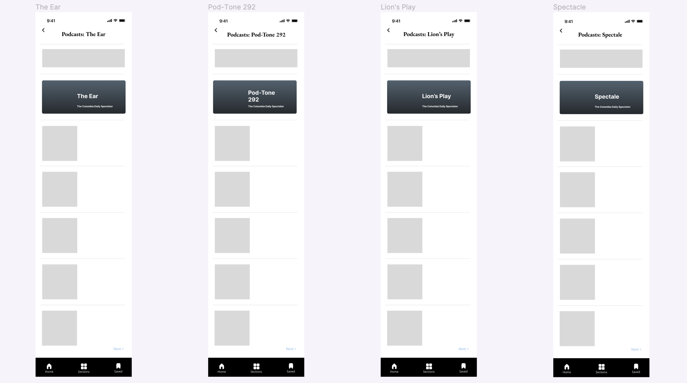

This is the prototype of the final design. The home page has one feature article that would change periodically along with the four section pages. Clicking into any of the four section pages would then show a new page with the description of the section at the top followed with the list podcasts. Clicking into one of the podcasts, the transcript page is shown with the podcast being available to play in the app. Buttons to save or share the podcast are conviently located at the top right corner.
Columbia Daily Spectator App Design (Podcast Section)
Position: Product Manager
Company: Spectator Publishing Company, Columbia Daily Spectator
Duration: February - April 2023
Tools: Figma, Trello
Overview
In this project, the Product Design team is committed to the transformation of the existing Columbia Daily Spectator website into a mobile app. My involvement started during the project's 2.0 phase, which includes the design of pages beyond the core Journalism sections. My responsibility was the design and adaptation of the Podcasts section into a mobile app interface that prioritizes simplicity and user-friendliness. Additionally, I was tasked with incorporating a feature allowing for in-app podcast playback.
Goals & Constraints
- Goals
- Design a mobile interface that allows users to discover and play podcasts seamlessly within the app.
- Maintain brand consistency with the Spectator website while optimizing for small-screen navigation.
- Increase podcast listen-through and retention by reducing redirect friction to external platforms (Spotify).
- Constraints
- Existing back-end only supported embedded Spotify content at the time of design.
- Limited engineering bandwidth for native playback; UX had to remain low-code friendly.
- Four-week design sprint; minimal developer overlap.
Current Website Design
The current podcase section first shows a featured podcast. The website has 5 sections on the navigation bar. The first four listed are the sections of the podcast, while the last one is special edition page. Clicking on the sections with the arrows will result on the two images depicted to the right.
Research
To gain understanding of how to curate the podcast page, we performed a competitive analysis on these three well-known platforms: Spotify, New York Times, and Apple Music. Through our research, we assessed which features would be beneficial to integrate into our app to make it as user friendly and intuitive as possible. One primary feature that we saw in all three apps was the pop-up at the bottom when the podcast is played in order for users to pause, play, skip forward, and play back.
Design Opportunities
- Homepage: This page showcases a featured podcast at the very top, along with by four organized
sections, offering users convenient podcast selection. Additionally, given our previously established Spotify page,
an accessible button can be provided for users to seamlessly transition to the Spotify platform.
- Section Pages: Each section page has an informative section description at the top, followed by
a list of podcasts. To enhance user experience and minimize scrolling, a "Next" button facilitates navigation to more podcasts.
- Transcript / Audio Page: A notable feature we aim to provide is the ability to enjoy podcasts
directly within the app, addressing the current limitation restricted to Spotify. This page incorporates a play
button at the top, initiating podcast playback. Furthermore, a sticky pop-up interface at the bottom allows users
to pause, play, skip forward, and rewind.
- Search Page: Users can conveniently use the the search button to easily find a particular podcast.
Scope & Responsibilities
- Defined MVP scope balancing playback complexity against time and dev bandwidth.
- Led prioritization sessions with design and editorial teams; managed backlog via Trello.
- Wrote acceptance criteria for key user flows and defined qualitative success indicators.
- Facilitated weekly check-ins and sprint retrospectives to maintain alignment.
Wireframe
 5 - Prototype